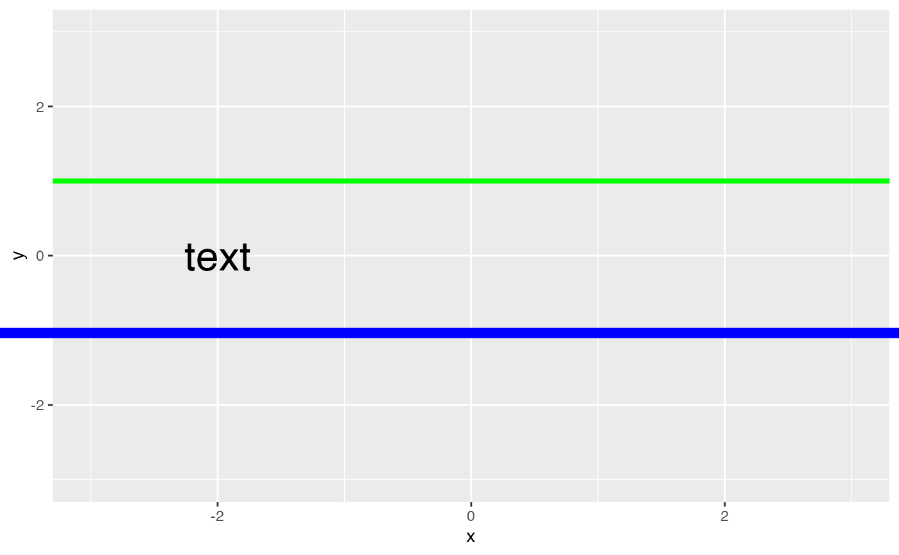

The factor .lwd is used to calculate correct output sizes for line
widths. For line widths in ggplot2, the size in mm must be divided
by this factor for correct output. Because the user is likely to prefer
other units besides for mm, gg_lwd_convert() is provided as a
convenience function, converting from any unit all the way to ggplot units.
.lwd gg_lwd_convert(value, unit = "bigpts")
| value | Numeric, the value to be converted. |
|---|---|
| unit | Char, the unit of the value to be converted. Can be any of the
units accepted by |
An object of class numeric of length 1.
.lwd is equal to ggplot2::.stroke / ggplot2::.pt. In
ggplot2, the size in mm is divided by .lwd to achieve the
correct output. In the grid package, however, the size in points
(pts (or maybe bigpts? Unclear.) must be divided by
.lwd. The user is unlikely to interact directly with grid,
but this is how finalize_plot() does its work.
This is closely related to ggplot::.pt, which is the factor that
font sizes (in pts) must be divided by for text geoms within
ggplot2. Confusingly, .pt is not required for ggplot2
font sizes outside the plot area: e.g. axis titles, etc.
gg_lwd_convert: Function to convert from any unit directly to ggplot2's
preferred millimeters.
grid's unit, ggplot2's
.pt, and
https://stackoverflow.com/questions/17311917/ggplot2-the-unit-of-size
ggplot() + coord_cartesian(xlim = c(-3, 3), ylim = c(-3, 3)) + # a green line 3 points wide geom_hline(yintercept = 1, color = "green", size = gg_lwd_convert(3)) + # black text of size 24 points annotate("text", -2, 0, label = "text", size = 24/ggplot2::.pt)# a blue line 6 points wide, drawn over the plot with the `grid` package grid::grid.lines(y = 0.4, gp = grid::gpar(col = "blue", lwd = 6 / .lwd))